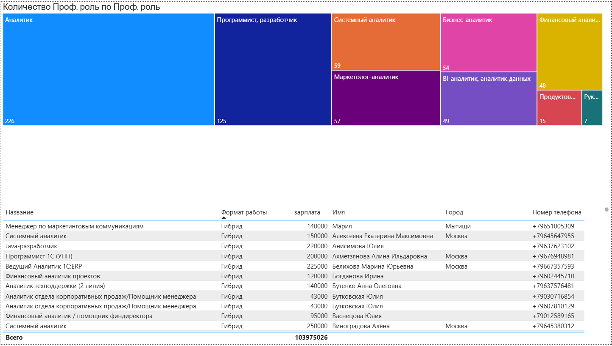
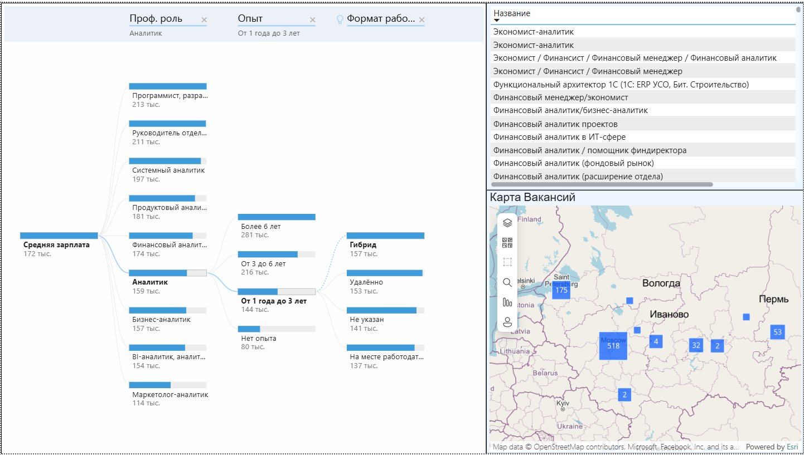
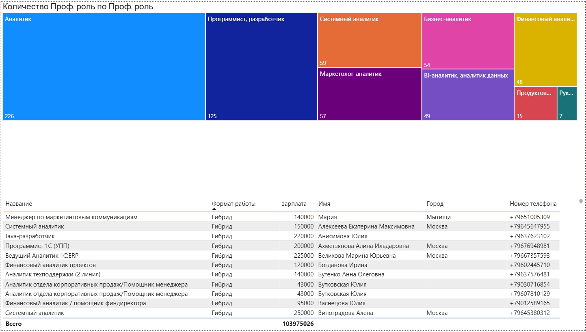
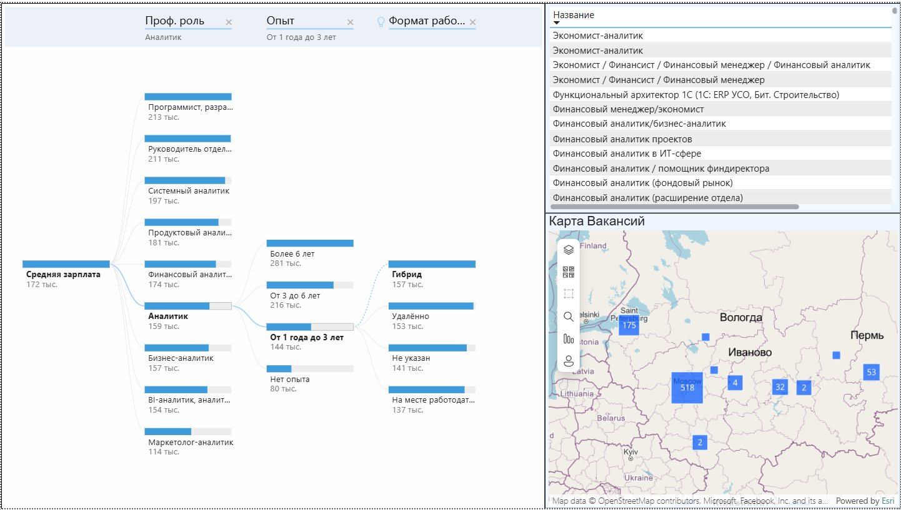
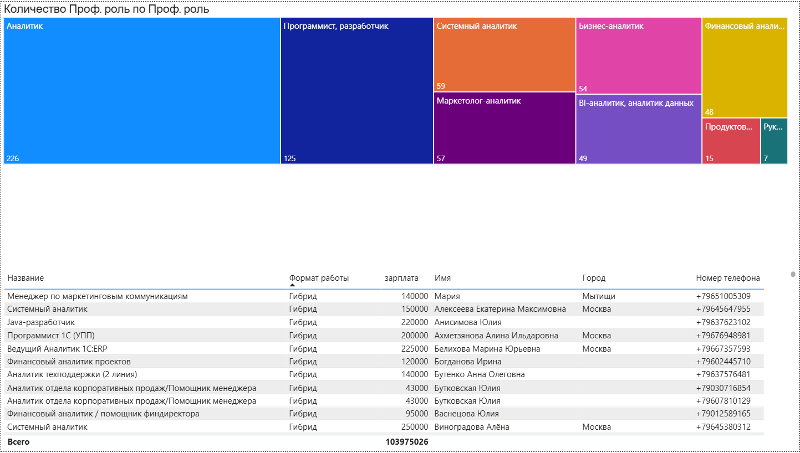
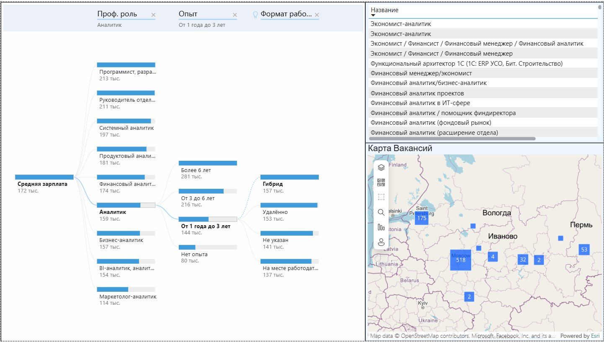

Скриншоты проекта:
 



Это интерактивный дашборд анализа зарплат аналитиков по данным hh.ru, опубликованный в виде отдельного сайта.
Он показывает текущий рынок: количество вакансий, долю удалёнки, среднюю и медианную зарплату, а также географическое распределение предложений по городам России на карте.
Верхний блок KPI отражает ключевые показатели: всего вакансий, число удалённых позиций, среднюю и медианную зарплату аналитиков.
Фильтры слева позволяют на лету отбирать вакансии по формату работы (офис, гибрид, удалёнка), опыту и профессиональной роли, что делает дашборд удобным для таргетированного анализа рынка труда.
Карта в центре показывает концентрацию вакансий по регионам и крупным городам с помощью пузырьковой визуализации; размер маркера передаёт количество предложений, что помогает быстро выявить основные центры найма.

